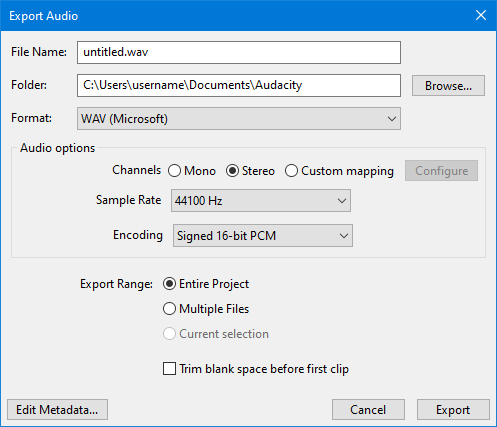
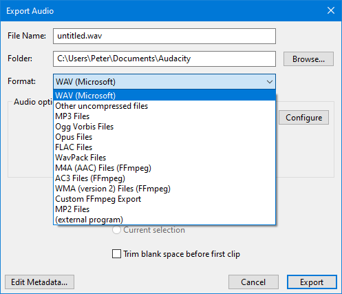
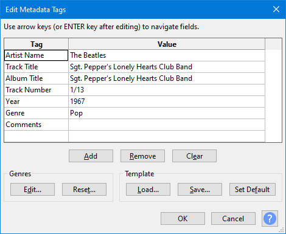

Export Audio
Exports one or more audio files in any format that Audacity supports from the whole project or the current selection:
- It lets you set the folder location, file name, format and encoding options for your exported file
- You can use Export Audio to export multiple tracks as a mono or stereo mixdown, or as a multi-channel audio file by enabling Advanced Mixing Options.
- You can use Multiple Files to export multiple audio files (based on labels or multiple audio tracks) in one process.
- When using Export Audacity will only export tracks that are not grayed-out by use of the or buttons in the tracks' Track Control Panels.
- Also note that any hidden parts of audio clips are not exported, see Audio Tracks and Clips.
- Accessed by: Ctrl + Shift + E
- 
Contents
- Summary
- File name, folder location and format
- Format options
- Audio options
- Export Range
- Trim blank space before first clip
- Metadata
- Mixing
- Cancelling the export process
- Export progress dialog
Summary
In summary, there are several steps to follow when exporting:
- Choose the file name to export to.
- Choose the folder to export to.
- Select the Format required for your exported file.
- Select the sample rate required for your exported file.
- Choose the export range: whole project, current selection or multiple files.
- Optionally, press to edit the metadata tags for your exported file.
- The Metadata Editor dialog will then appear. This lets you enter embedded information tags in the file such as artist, year or genre.
- Press .
File name, folder location and format
File name
Type the required file name. The correct file extension - preceded by a period (dot) - will be added automatically to the end of the file name, according to the format selected in the "Save as type" list (see below). For example, typing "08 Voodoo Chile" (without quotes) will produce a file "08 Voodoo Chile.wav". For M4A and WMA formats (for which the optional FFmpeg library is required), you can add alternative extensions as specified in "FFmpeg formats" below.Any other extensions can be added after a file name as required, but Audacity will display a warning that this is not the normal extension for this file type, and that some applications might not play files with non-standard extensions.
Help with choosing the file name:
|
Folder
Clicking the button opens a standard File Export Dialog in which you select the location to which the files will be exported.
Format
Clicking in the input box opens a dropdown menu enabling you to chose the file format you wish to export to:
Hover over each row in "Save as type:" in the image to see the tooltip and click in that row to learn more. Skip the image
- 
- Export Formats supported by Audacity for more details on the various format types that Audacity supports for export
- Exporting using an external encoder Program for details of how to export audio for use in an external encoder
- Custom FFmpeg Export Options for details on how you can export a specific codec in a specific format container
| WAV files are limited to a maximum size of 4GB - see this page for details of how that relates to maximum times. |
Format Options
Some formats offer options for making settings like quality or encoding.
Export options vary from one audio format to another:
- WAV Export Options
- Other uncompressed files Export Options
- MP3 Export Options
- Ogg Vorbis Export Options
- Opus Export Options
- FLAC Export Options
- WavPack Export Options
- AAC Export Options
- AC3 Export Options
- WMA Export Options
- Custom FFmpeg Export Options
- MP2 Export Options
- (external program)
| Custom FFmpeg Export:
Using the Custom FFmpeg Export provides access to a much wider range of export formats and codecs. For more information on this please see Custom FFmpeg Export Options. Be aware that not all combinations of format and codec that are offered in the dialog will work properly, you will need to experiment. |
Audio options
Channels
Sets the number of channels for the exported audio file. There are three options:
- Mono: single channel
- Stereo: stereo pair with left and right channels - this is the default setting even if you only have mono tracks for exporting
- Custom mapping: use this to export multi-channel (surround sound) files or to make customized assignments between Audacity tracks and the channels in the exported file.
- Selecting this and clicking on the button causes the Advanced Mixing Options dialog to appear. For details please see Advanced Mixing Options.
Sample Rate
Sets the sample rate for the exported file. Default setting is 44100 Hz, which is CD quality.
Encoding
This option is for the default WAV exports, selecting other file formats will cause different options to appear in this position.
It sets the encoding to be used for the exported WAV file. Default is Signed 16-bit PCM, which is CD quality
Export Range
Entire Project
Choosing this will export the entire project less any tracks that are grayed-out by use of the or buttons in the tracks and are inaudible on playback.
Multiple Files
This allows you to do multiple audio file exports from Audacity, either based on the multiple tracks in the project, or based on the labels in a single audio track. As with Export Audio muted tracks are not exported.
Selecting this will cause the Export dialog to be expanded - see Export Multiple for details.
| A great time-saver for splitting up long recordings into separate CD tracks, or archiving multiple working tracks.
See the Tutorial - Copying tapes, LPs or MiniDiscs to CD for an example of how this is used. |
Current Selection
When choosing this, Audacity will Export the selection from all selected tracks even if some if those tracks are grayed-out by use of the or buttons in the tracks and are inaudible on playback.
- IF you last used Entire Project THEN Entire Project will be offered
- IF you last used Current Selection AND you have a selection active THEN Current Selection will be offered, ELSE Entire Project will be offered,
- IF you last used Multiple Files AND you have a label track with at least one label THEN Multiple Files will be offered, ELSE Entire Project will be offered.
Trim blank space before first clip
If this is unchecked (default setting) when exporting audio any leading blank space offset in the tracks or project to be exported is treated as silence and appropriate leading silence will pad the exported audio.
If you check this box, leading blank space will be ignored on Export.
| A use case for turning this "on" is track-based multiple export where you have "songs" lined up one after the other on different tracks In this case you probably do not want the offsets exported as long silences at the start of "songs". |
Metadata
If you press the button then the Metadata Editor dialog will appear.
This lets you enter embedded information tags in the file such as artist, year or genre.
- 
Mixing
Automatic Mixing on Export
By default, multiple stereo tracks are mixed down to a single stereo file on Export.
Also by default, multiple mono tracks are mixed down to a mono file, but if you pan any mono tracks to left or right or if there are any stereo tracks among the tracks to be exported, the tracks are mixed to a stereo file.
Note that the mono tracks are mixed to both the left and right channels of the resulting stereo file.
Advanced Mixing Options
The Advanced Mixing Options dialog appears when you click on the button in the Export dialog.
Use this dialog to export multi-channel (surround sound) files or to make customized assignments between Audacity tracks and the channels in the exported file.
For details please see Advanced Mixing Options.
Cancelling the export process
You may abort the export process without writing the file by pressing the button in the Export Audio dialog. If you Cancel, any changes you made to the "Save in:" directory or file type will not be preserved for next time you export.
Export progress dialog
Once you have clicked the button in the export dialog and in Edit Metadata, Audacity will display a dialog displaying the progress of writing the exported file:

The colored progress bar is a visual indicator of how much of the file has been written. The Elapsed Time and Remaining Time are estimates and may change as the export progresses.
Stop and Cancel
Clicking the:
- button will halt the export where it is now, leaving the partially exported file in place,
- button will abort the export leaving no exported audio file.